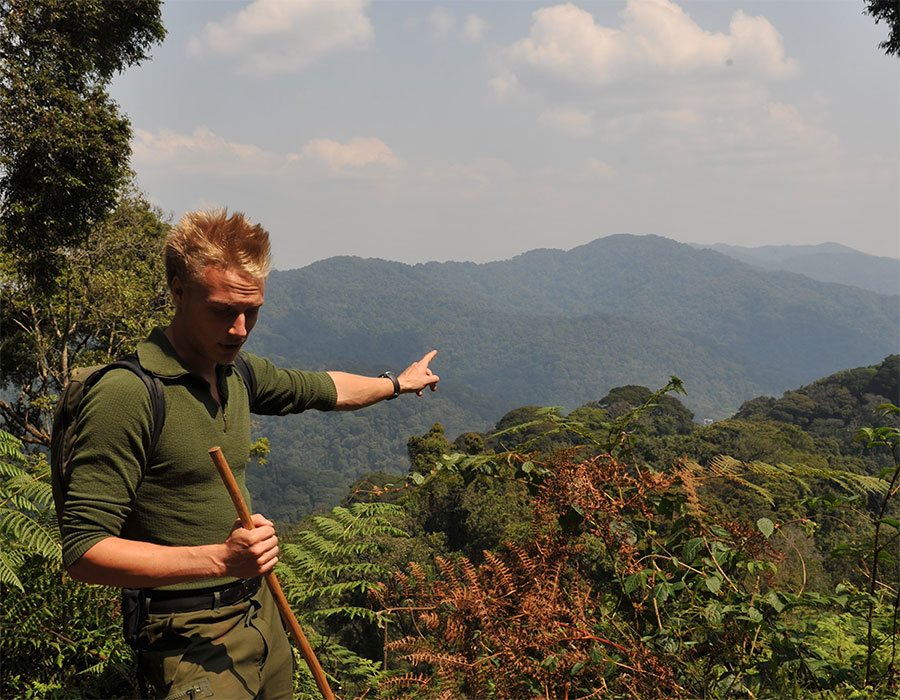

{kind=link}
Presentation
Om mig, varför jag är här och vart jag är påväg
{kind=link}
Hej, mitt namn är Kristoffer. Innan vi går vilse helt och hållet
tänker jag börja med att bygga en liten kontext för vad som
kommer att skildras här:
- Min personliga historia
- Var jag har varit
- Vad som har hänt
- Vad jag har lärt mig
- Varför jag är här nu
- Vart jag är påväg härifrån
Jag har vuxit upp en liten avstyckad gård nedanför Rommelåsens södra sluttningar. Detta är i Skåne. Det var en skyddad verkstad på alla sätt och vis. Närmaste "samhälle" låg ca 2 km bort och hade ett invånarantal på typ 120 personer.
Jag växte upp tillsammans med två betydligt äldre systrar, en mor och en far. Det var långt till staden och nära till skogen, åkrarna, djuren och ängsmarkerna. Som barn hade jag alltid mycket spring i benen och min nyfikenhet var oftast starkare än min rädsla. Efter 3 år på teknikprogrammet i Ystad med dramastiskt varierande betygsresultat så började jag jobba på en kulturhistorisk byggfirma i södra Skåne. Här byggde jag bl.a. en hemsida och fick därför en del grundläggande kunskaper inom html.
Sen fick jag stiga på ett tåg upp till Lappland för att bli bergsjägare. 15 månader senare hade jag utvecklat en viss hybris blandat med en hög tolerans för sub-arktiska temperaturförhållanden. Efter det här tog jag ett par kliv upp i näringskedjan. Under ett par månaders tid så arbetade jag som cykelmekaniker i Malmö och på helgerna så fick jag duscha mig i känslan av att gå in i en lokal med över 15 000 individer och veta att jag otvivelaktigt var den mest begåvade av dem alla. Så under helgerna jobbade jag som äggplockare på ett hönseri.
Olja och fjädrar har sin charm men efter en stund ville jag testa något nytt. Under ett par års tid blev det här ett av mina avgörande teman. Alltså inte oljan och fjädrarna utan att: Testa nya saker. Under de senaste 3 åren har jag huvudsakligen bott i Kalmar, Bergen eller Lund. Stundtals har jag bytt stora delar av min vakna tid mot pengar men det har samtidigt gjort att jag har fått lära mig många både relevanta och arbiträra saker. Jag har fått vara takläggare, bartender, städare, butiksbiträde, lagerarbetare och träningsrådgivare m.m. Det jag förmodligen har sysslat med mest har varit att sälja olika grejer. Jag har sålt allt ifrån stöldmärkningar, kreditkort, välgörenhet, parkettgolv, telfoner till något så godtyckligt som "hälsa". Det denna bakgrund har lärt mig är att jag är en ganska medioker kille med ett rätt nishat intresse.
Ett av dessa intressenen har varit att resa. Jag har fått resa runt en del i Europa, Nord Amerika och Central Afrika. Jag har missat flyg i New York, blivit av med mitt bagage i Kigali, blivit rånad i Istanbul, träffat på gorillor i Kongo och fågelspindlar i min säng. Jag vill understryka att jag starkt ogillande det sistnämnda mötet. Sammanfattningsvis vill jag nämna att mina största lärdomar har kommit ifrån mina förhållanden och/eller mina nära vänner.
Nu kanske du frågar dig: Vad ska allt det här kulmininera emot, vart är snubben påväg? Sanning är att jag börjar bli så trött på att skriva om mig själv så vi tar det en annan gång. Jag hoppas att jag inte har skapat samma känsla hos dig som läser :)
2013/10/03 Kristoffer
Här kommer några externa länkar för länkandets skull: